分数和除法我们已经非常熟悉了，在小学阶段我们就曾经全面接触分数间的运算法则．
同分母分数相加减，分母不变，分子相加减，如
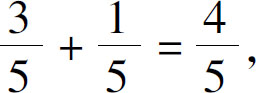
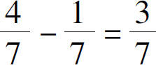
．异分母分数相加减，先通分变成相同的分母以后，再进行加减，如
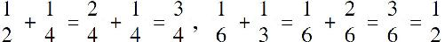
．分数乘法：分子乘分子，分母乘分母，如
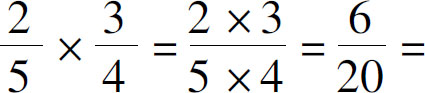
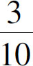
．分数除法：把除数分子分母颠倒以后，变为乘法，如
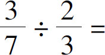
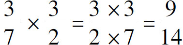
．那么，分数的上述计算规则背后的原理是什么呢？接下来，我们通过代数算式将其证明：首先，为什么同分母分数才能相互加减？为什么分数相加不能像乘法一样，分子分母分别相加呢？其实，我们应该把任何一个分数都看成一个乘法算式，例如
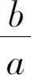
，我们可以看成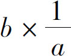
，那么同分母的分数相加就符合了乘法分配律，即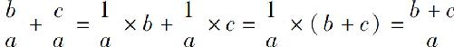
．但是如果是分母不同的两个分数相加，由于整个算式就没有公因式可被提取，因此无法直接计算．
其次，我们应该知道，分数的通分和约分是以除法的协变性为前提的，因为分子分母同时乘除一个数，分数值不变，即
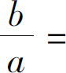
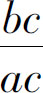
，于是当分母不同的时候，我们可以把两个分母不同的分数通分或约分，如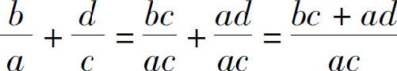
．最后，我们要知道的是，分数的乘法其实遵循的是乘法的交换律和结合律．当我们把除法当作乘法看待以后，原来的分式变成了乘式，两个乘式相乘，顺序当然可以是任意调整的，即
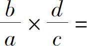
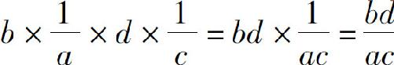
．同时，由于乘法和除法是可以互换的，所谓的分数相除颠倒变相乘，也可以看作分子除分子，分母除分母，这样乘除法的规则就统一了．即
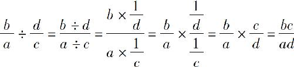
．以上就是分数和分式计算的规则．跟加减法及乘法相比，除法的运算确实复杂了很多，正因如此，在实际处理代数算式的时候，只要有可能，我们总是希望把分式处理成整式的形式．比如在处理根式的时候，我们不允许根式中存在分母，也不允许分母上有根式．同时，在处理方程的时候，我们一般也会首先把分式方程化为整式方程，只要我们随时注意分母不为0的禁忌就可以．
下面，让我们处理几个分式问题：
当x 在什么范围时，分式
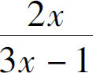
有意义？显然，条件是分母不能为0，也就是3x －1不等于0，把－1挪到右边，得到3x 不等于1，也就是x 不等于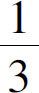
．化简
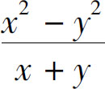
．显然，分子符合平方差公式，把分子做因式分解，得到（x ＋y ）（x －y ），此时分子分母上同时存在（x ＋y ），可以约分，得到的结果是x －y ，当然，由于0不能做除数，所以我们必须明白只有在x ＋y 不等于0的条件下，我们才能让分子分母同时除以x ＋y ，那么x ＋y 有没有可能等于0呢？通过观察我们发现，由于原式中x ＋y 本来就是做分母的，所以可以认为x ＋y 是不为0的，因此结果等于x －y 是准确无误的．计算
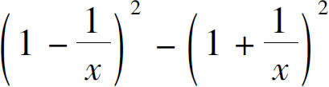
．当我们面临一个复杂算式的时候，应该先从整体把握，而不是从局部入手．我们一看算式整体符合平方差公式，它等于两式相加乘以两式相减．而两个式子相加以后，可以把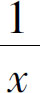
消掉，得到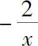
；两式相减，可以把1消掉，得到－x ，两者相乘得到最终结果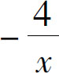
．最后，我们求解一道分式方程问题：
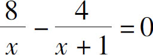
．求解分式方程时，应该先把它化成整式方程．我们发现两个分式的分母不同，就可以在方程两侧同时乘以两个分母的乘积x （x ＋1），消掉分母后，得到8（x ＋1）－4x ＝0，把8乘到括号中，得到8x ＋8－4x ＝0，把8x 和－4x 合并同类项，得到4x ＋8＝0，方程左右两边除以4，得到x ＋2＝0，移项得到最终结果：x ＝－2．由于分式方程有分母不为0的禁忌，所以在计算完成后，我们还必须把x ＝－2代入到原方程中，验证分母是否为0．当x ＝－2时，分母x 和x ＋1都不等于0，所以x ＝－2是原方程的根．
在本节中，我们讨论了分式计算的规则．无论分式多么复杂，其基本规则都是不变的，在分式通分约分及加减乘除的过程中，我们会反复遇到多项式展开和因式分解的问题．在处理这类问题的时候，要始终把握住算式的整体，不要过早陷入细节．
学完了分式运算以后，初中代数的所有运算法则，我们就都学完了．我们最早用加减乘除所画下的四行三列的网格也全部填充完整了，我们从最简单的数数开始，讲到负号，讲到等式的规则，讲到加减乘除的基本规律，我们学习了乘方和开方两种基本法则，学习了多项式的展开和因式分解．不知你是否把所有的基本知识都融会贯通起来了．如果没有的话也不要灰心，只要适当地多加练习，很快会全面掌握这些内容．
记得我说过，学习的目的是学会自己不知道什么，如果你现在仍然觉得数学很复杂，我要告诉你的是数学非常简单；但是如果你觉得这些加减乘除的算法很简单，那我要告诉你的是数学很难．用数学知识解决现实问题就像开车走在路面上，开车的技术很简单，但路面的情况很复杂．对于那些把开车本身看得很复杂的人，我要告诉他，开车并不难，只不过就是转向和加减速而已．但对于那些把车开得飞起来的人，我要告诉他，路况很复杂，什么样的情况都会遇到，如果不保持警惕随时都会有危险．那些让人头疼了几百年的数学问题，都是一些看起来超级简单的问题．这就是数学，它能超级简单地解决一个复杂的问题，也会让你对一个超级简单的问题束手无策．